Online Art Gallery
Art gallery for children, project created with HTML, CSS & JavaScript
Project Description
Welcome to "Fauna 51" – a unique fusion of classical artistry and digital innovation crafted by our dedicated team. In this online sanctuary, we celebrate the timeless allure of classic paintings while infusing them with a whimsical twist: each masterpiece is reimagined with animals as the protagonists, brought to life through the magic of AI.
Our virtual museum is more than just a gallery; it's an interactive experience that educates and entertains. Delve into the fascinating world of art history, discover intriguing facts, and explore the significance behind each work.
But we don't stop at visual admiration. "Fauna 51" offers an exclusive line of merchandise, allowing patrons to take a piece of this reimagined history home. From bespoke prints to designer apparel, each item in our collection is a conversation starter.
Technical Learning Outcomes
In the creation of the online art gallery, my engagement with the latest trends in digital experience design was not just theoretical but deeply practical. This project served as a canvas to apply cutting-edge design concepts, particularly focusing on how these trends could enhance the user's interaction and enjoyment of art in a digital space. One of the standout features of the art gallery was the incorporation of a 3D model set on a continuous rotation—a duck in a pond—on the contact page. This choice was inspired by the rising trend of using 3D elements to create more immersive and engaging web experiences. The model was not just decorative but a deliberate attempt to draw users into the gallery's world, offering a unique interaction point that set the tone for the creativity housed within. The contact form's design was guided by the trend towards minimalism in digital design. Using Formspree, I crafted a user-friendly form that embodied simplicity and ease of use, ensuring that visitors could easily reach out without navigating through complicated or cluttered interfaces. This approach was about stripping down to the essentials to enhance functionality, a principle that has become increasingly important in modern web design. The development of the online art gallery was a journey marked by a commitment to embracing current trends in digital experience design. From the interactive 3D model to the minimalist contact form, each design choice was a step towards creating an art gallery that was not just a space to view art but an artwork in itself. This project highlighted the importance of staying abreast of design trends, being receptive to feedback, and continually striving for improvement. It was a vivid demonstration of how digital trends could be harnessed to create engaging, user-friendly, and aesthetically pleasing digital environments.
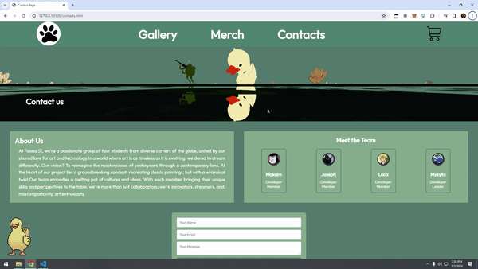
The journey of creating Fauna 51, an online art gallery blending classic art with animals through AI for children, epitomizes the essence of the iterative design process. Initially envisioned as a gallery for a broad audience, the project's direction shifted dramatically through continuous feedback and reflection, underscoring the project's evolution to meet user needs and preferences. Our initial ambition was to craft an online space where art and technology converged, offering an immersive experience to all visitors. However, through extensive discussions and feedback from peers, teachers, and other stakeholders, we recognized the potential impact of focusing on a specific audience. This pivotal moment redirected our efforts towards creating an engaging, educational platform for children aged 5-8 years, integrating AI with classical art and animals to produce a unique learning experience. The transformation from a general art gallery to Fauna 51 was not without its hurdles. Team communication and workflow issues presented significant challenges, demanding flexibility, patience, and a commitment to collaborative problem-solving. Feedback became our guiding light, leading to numerous iterations that gradually shaped the project's identity. Each round of critiques and suggestions propelled us to reconsider and refine our approach, ensuring the final product would resonate with our young audience. In response to feedback emphasizing the importance of vibrant, captivating visuals for children, we infused Fauna 51 with color and whimsy. The transition to a more colorful and visually appealing design was not merely aesthetic but strategic, aimed at capturing the imagination of children and fostering a love for art and learning. These changes were meticulously documented and incorporated, reflecting our dedication to creating an environment where art becomes accessible and enjoyable for kids.
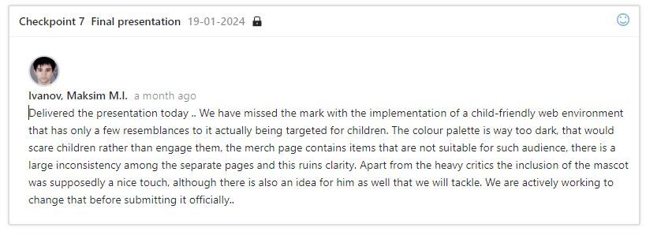
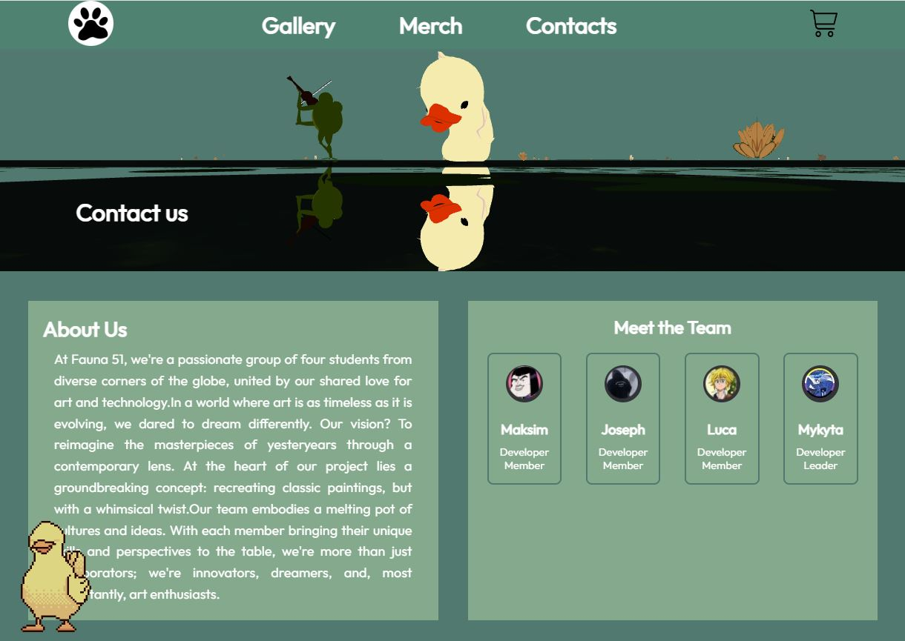
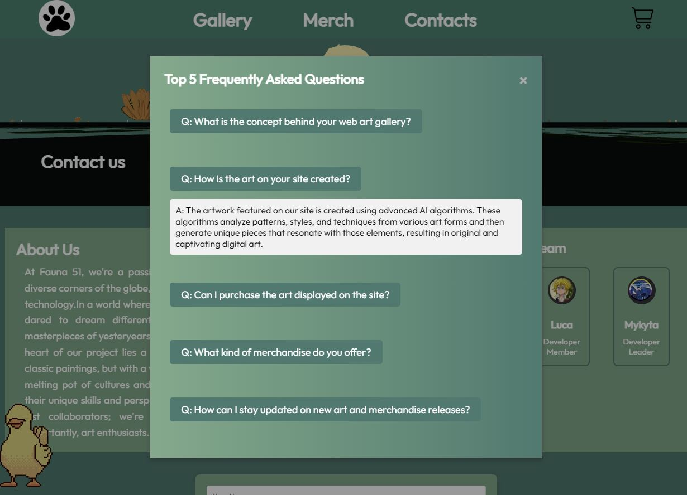
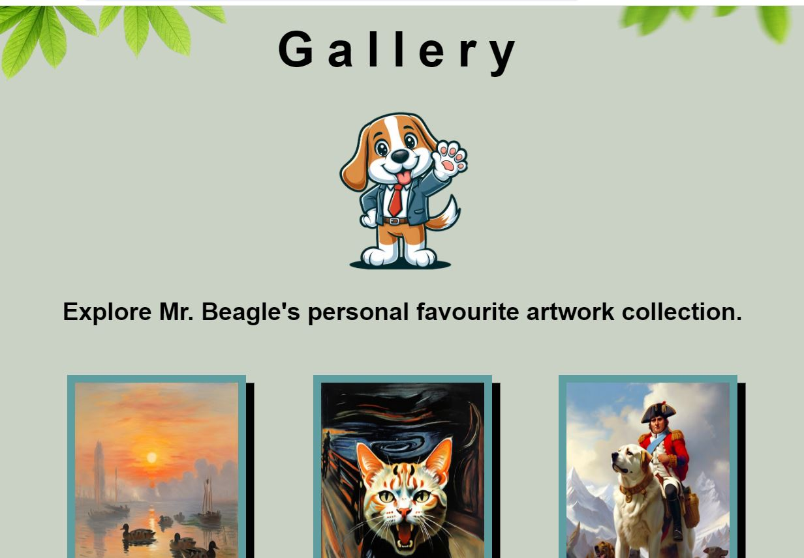
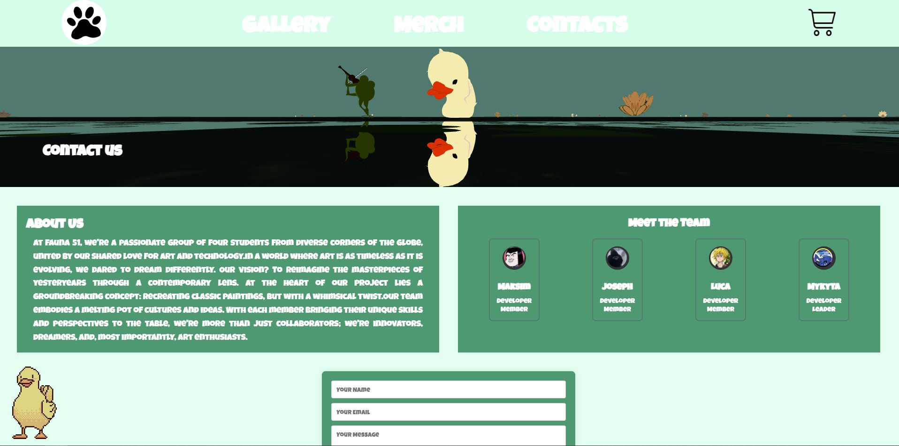
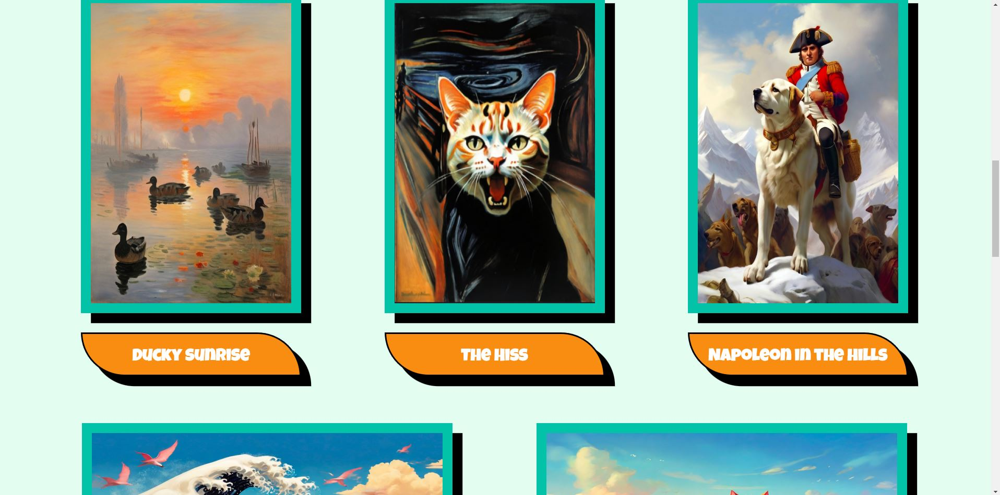
In the development of Fauna 51, an online art gallery designed for children, our primary objective was to create an environment that was not just visually appealing but also intuitively interactive. This journey began with a minimalist design ethos, ensuring the digital space we were crafting would be both user-friendly and conducive to a child's exploration. The design process initiated with hand-drawn paper prototypes, a method that allowed us to rapidly conceptualize and iterate on our ideas. These early sketches served as the foundation for our project, embodying our vision for a platform that could seamlessly blend art with education for a young audience. Upon presenting these preliminary designs to colleagues and teachers, we gathered valuable feedback, which prompted refinements before moving to the digital prototyping stage in Figma. Our technical framework predominantly utilized HTML and CSS, chosen for their flexibility and effectiveness in creating responsive designs. A modest addition of JavaScript enriched the user experience, enabling dynamic interactions such as the contact form submission and the captivating 3D model animation—elements that were crucial in making the gallery not just a site to visit, but an experience to engage with. Throughout this process, we employed Google Forms to collect ongoing feedback, a strategy that ensured our design remained aligned with user expectations and accessible to our target demographic. This feedback loop was instrumental in our iterative design process, allowing us to adapt and enhance Fauna 51 continuously. The journey from concept to completion was as much a learning experience as it was a design challenge. Each stage of feedback and revision taught me the value of user-centered design, especially when creating digital spaces for children. The iterative process underscored the importance of flexibility in design and the need to remain open to feedback—principles that have profoundly influenced my approach to digital product development. Creating Fauna 51 was a testament to the power of interactive prototypes in the design process. By weaving together minimalistic aesthetics, thoughtful user interactions, and continuous feedback, we crafted a digital art gallery that not only educates but also delights its young audience. This project has not only broadened my skills in digital design but also deepened my appreciation for the iterative process as a cornerstone of user-centric development.
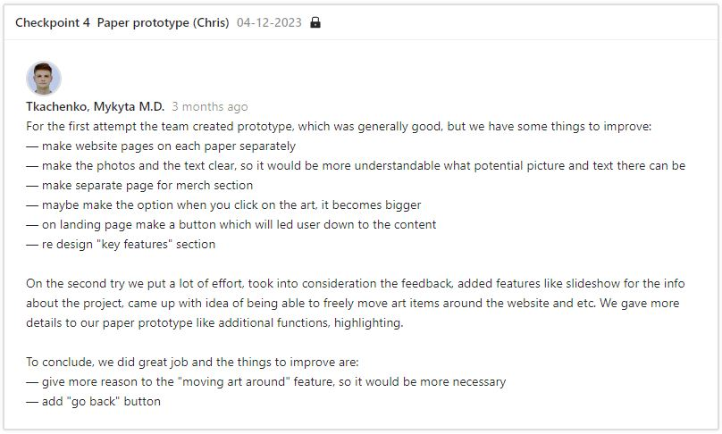
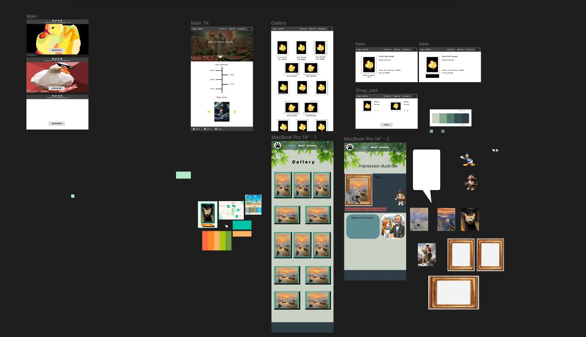
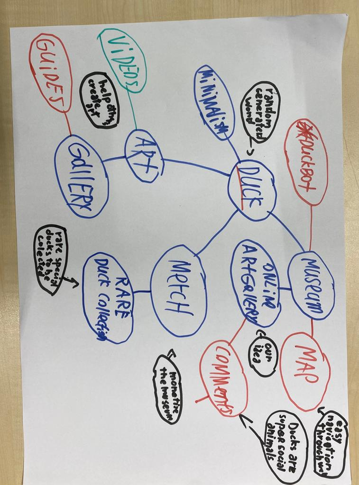
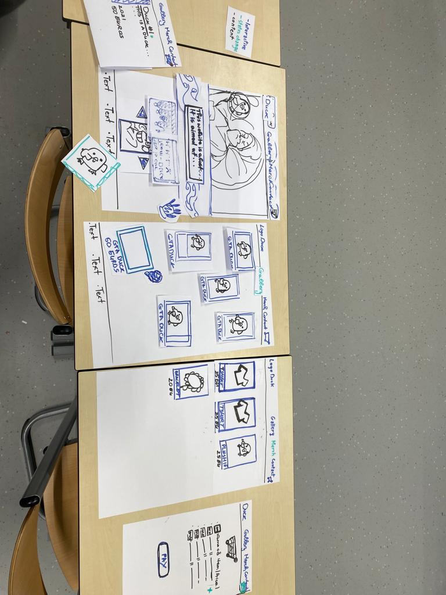
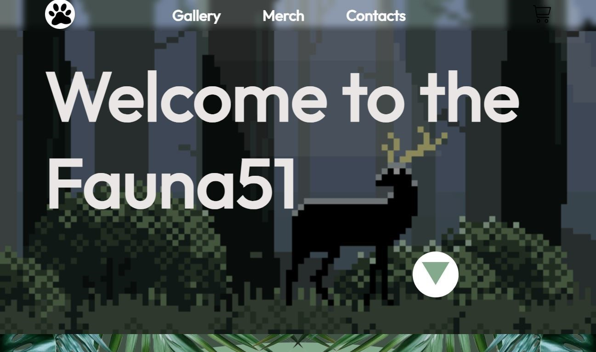
Our approach began with an exploration into the psychological impact of colors on children. This research informed our palette choices, ensuring that every hue contributed positively to the user experience, fostering an environment that was both stimulating and comforting. Additionally, we recognized the importance of interactivity in maintaining children's engagement. This led to the development of features like the gallery page, where clicking on an artwork not only enlarges it but also unveils the real painting alongside educational tidbits about the artwork and its creator. Understanding our audience's developmental stage guided us in making the site as navigable and enjoyable as possible. A notable innovation was the custom cursor design—a Mickey Mouse glove—transforming each click and hover into a delightful discovery, making the digital exploration feel more personal and engaging for young users. Feedback is a cornerstone of effective design, especially when creating for children. One piece of user feedback highlighted that our initial color scheme might be too dark for a child-friendly site. Taking this insight to heart, we embarked on a redesign, brightening the color palette to better suit our young audience's preferences and enhance the overall vibrancy of the site. This change was not just aesthetic but aligned with our goal to create a welcoming, joyful space for children to explore art. Creating Fauna 51 was a journey marked by a profound respect for our target group's needs and preferences. Through research, iterative design, and responsive feedback integration, we developed an online art gallery that resonates with children, inviting them into a world where art comes alive. This project has reinforced the value of a user-centered approach, reminding us that the best digital experiences are those crafted with the end-user's interests at heart.
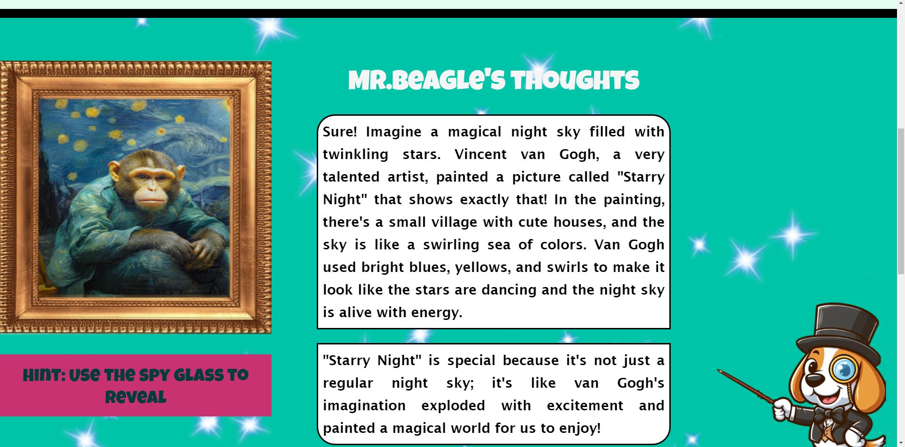
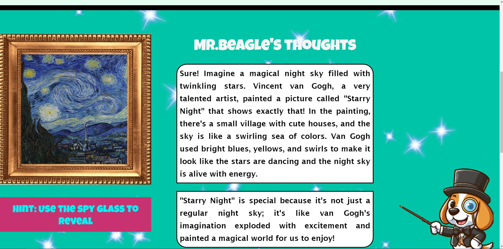
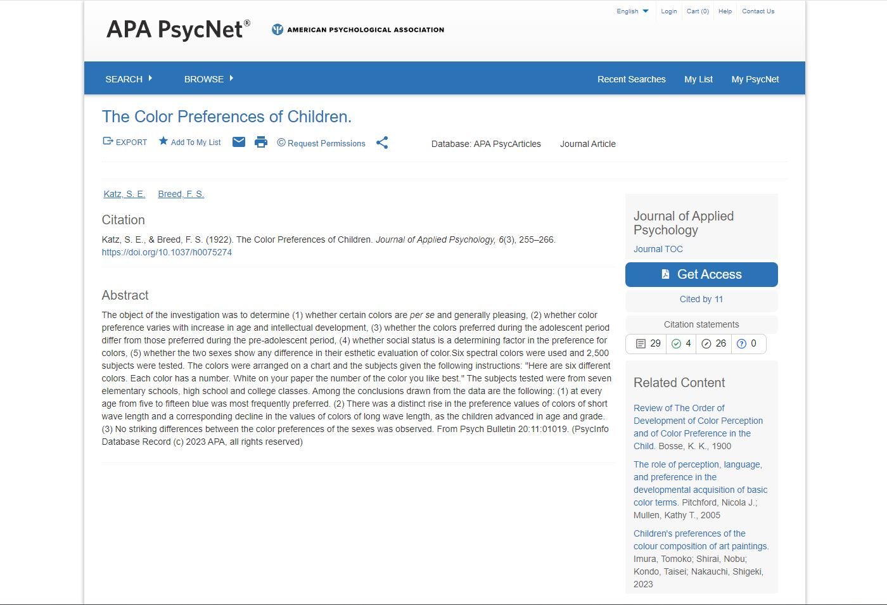
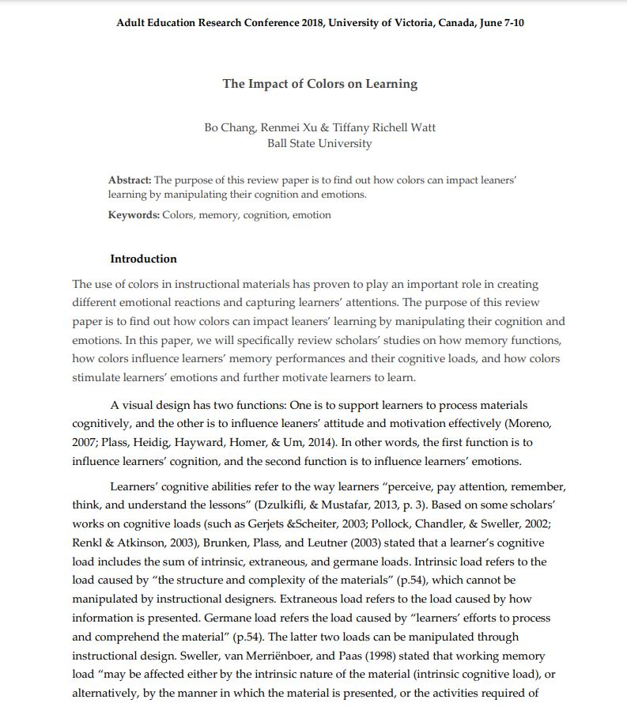
Professional Learning Outcomes
Our team embarked on this journey with a structured approach, delineating roles and responsibilities early on to ensure efficiency and accountability. The project plan included:
Digital Prototype Development: Led by our Planner, Maksim, and executed with the support of colleagues Josif and Luca, our digital prototype was the blueprint from which the fully functional web application emerged.
Technical Implementation: My role encompassed weaving the fabric of the website with HTML, CSS, and a touch of JavaScript, creating a seamless and engaging user experience. The backend functionality, although minimal, was crucial in supporting the gallery's interactive features.
Our project was not without its risks, from scope changes to technical hurdles. Each risk was met with a pre-emptive solution, ensuring that unexpected challenges did not derail our progress. Regular team meetings and a commitment to clear communication helped us navigate these obstacles, adapting our strategies as needed to stay aligned with our objectives.
Quality was paramount in our project execution. Implementing a robust quality assurance process, we ensured that Fauna 51 not only met but exceeded the expectations of our intended audience. Feedback from peers, teachers, and potential users was integral to this process, providing insights that refined and enhanced the gallery's design and functionality.
The development of Fauna 51 exemplifies the essence of future-oriented organisation. Through meticulous planning, strategic risk management, and a commitment to quality, our team transformed a visionary concept into a tangible reality. This project not only showcases our technical and creative skills but also our ability to think ahead, plan with precision, and execute with excellence, setting a new standard for digital art engagement.
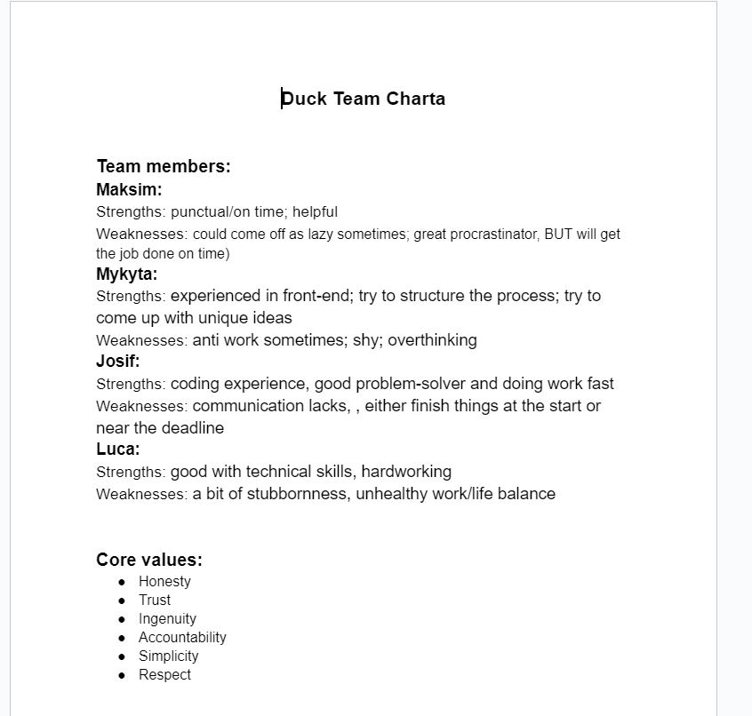
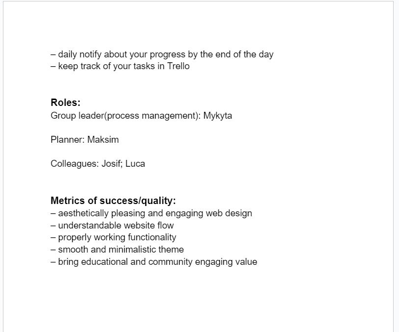
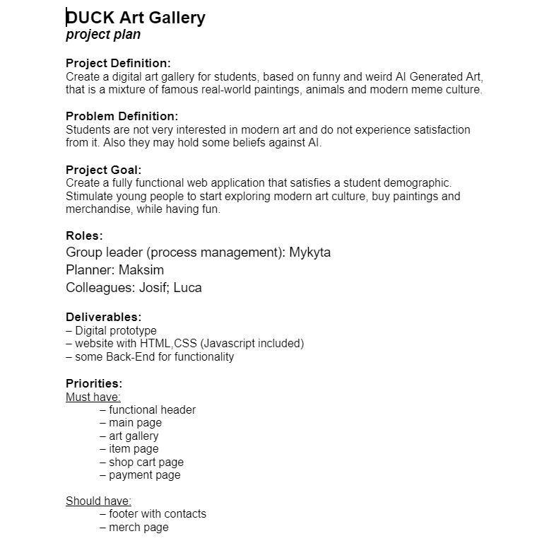
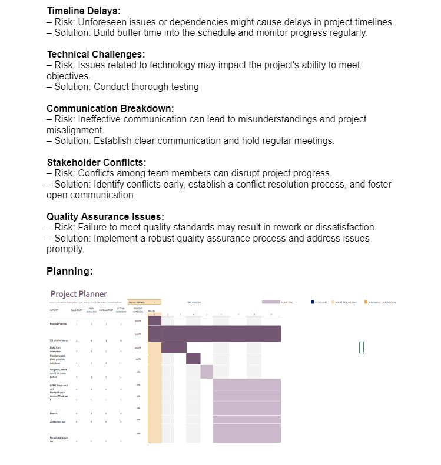
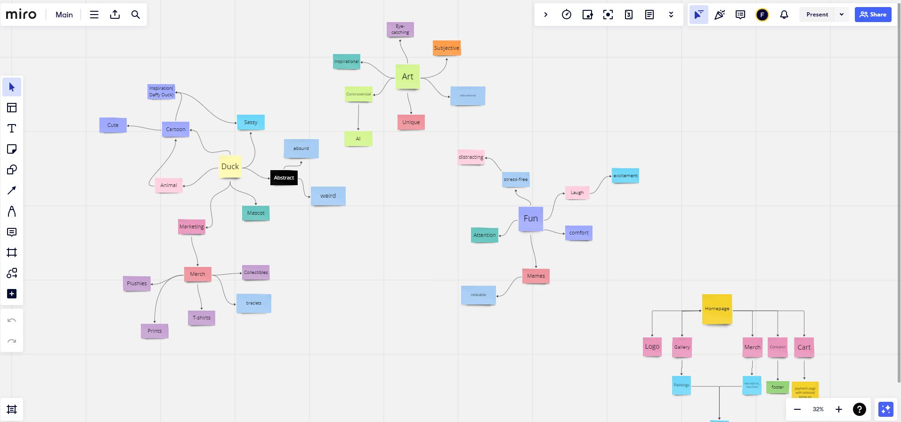
The development of Fauna 51, an innovative online art gallery blending AI with classical art and animals, presented a unique set of challenges that extended beyond the technical realm into the intricacies of team collaboration and project vision. Our journey was marked by a critical investigation into not only the project's conceptual direction but also the dynamics within our team. Early in the project, we encountered significant hurdles stemming from communication gaps among team members and differing visions between the group and our team leader. These issues led to delays and a sense of restriction in exploring the full potential of our ideas. Despite efforts to resolve these conflicts through dialogue, the resolution was not straightforward, highlighting the need for a more structured approach to team communication and decision-making. The challenges with our team leader's acceptance of group ideas and the subsequent impact on work division prompted us to re-evaluate our collaboration strategy. We recognized the importance of balancing leadership guidance with member input to foster a more inclusive and productive environment. This realization was pivotal, albeit met with difficulties, in attempting to realign our efforts and ensure equitable task distribution. A significant conceptual challenge was solidifying a direction that effectively merged AI, classical art, and animals into a cohesive theme appealing to our target audience. The ambiguity surrounding how to integrate these elements led to a slow start, underscoring the need for a focused investigative process to define our niche and project scope clearly. The path to completing Fauna 51 was as much about navigating the complexities of team dynamics and conceptual clarity as it was about creating a digital art gallery. Our investigative problem-solving approach allowed us to address and work through significant challenges, leading to valuable learning experiences about collaboration, leadership, and project development. This journey has reinforced the importance of open communication, flexibility, and shared vision in achieving project objectives, laying a stronger foundation for future endeavors.
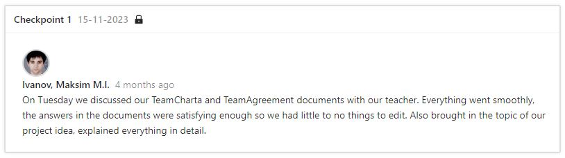
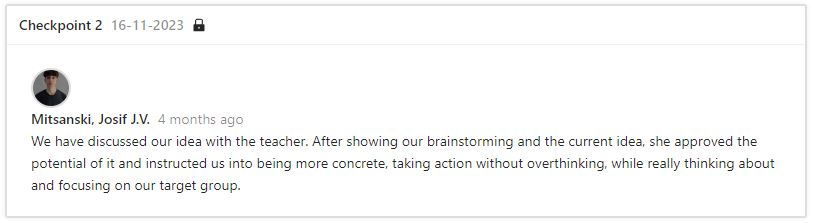
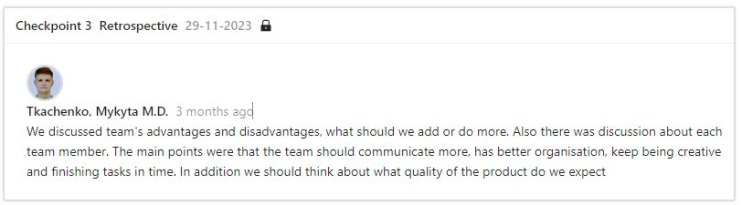
In the pivotal concluding weeks of the Fauna 51 project, the essence of personal leadership was not just required but exemplified through actions that transcended the usual responsibilities of a team member. Faced with the challenge of an unfinished group project and dwindling team engagement, I assumed a leadership role to navigate us through to successful completion and refinement post-feedback. As the deadline loomed, and with the team's focus divided by individual commitments, the collective effort needed to unite the disparate parts of our project was lacking. Recognizing the urgency, I took it upon myself to consolidate the work—merging the code for the main, gallery, and contact pages into a cohesive whole. This task required not just technical acumen but a profound sense of responsibility towards the project and my team. The merch page, a crucial component of our project, remained incomplete until mere hours before the final presentation. By motivating and supporting a team member, we managed to integrate this essential piece into the project framework in time. This last-minute push exemplified the importance of teamwork, even in the eleventh hour, and highlighted my commitment to ensuring our project was presented in its most complete form. Following our presentation, when the project could have been considered 'done' by many, I chose to go further. With constructive feedback from our teachers in hand, I collaborated with a fellow group member to refine our project further, ensuring that the final submission not only met but exceeded expectations. This step was a testament to my dedication to continuous improvement and learning. The journey to complete Fauna 51 under pressing circumstances showcased not only a deep-seated drive to succeed but also a recognition of the power of personal leadership in transforming challenges into opportunities. By taking control in moments of uncertainty, motivating team members towards a common goal, and prioritizing the project's success above all, I learned the invaluable lesson that leadership is not just about guiding others but also about fostering an environment where everyone feels compelled to contribute their best. This experience has indelibly shaped my approach to teamwork, problem-solving, and personal development.
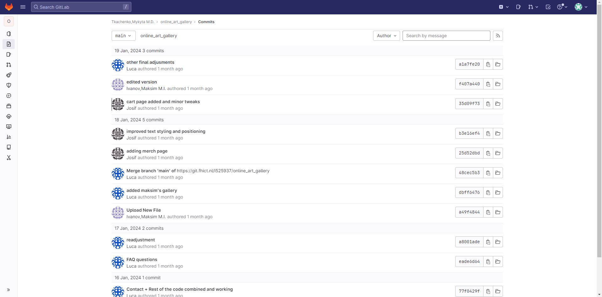
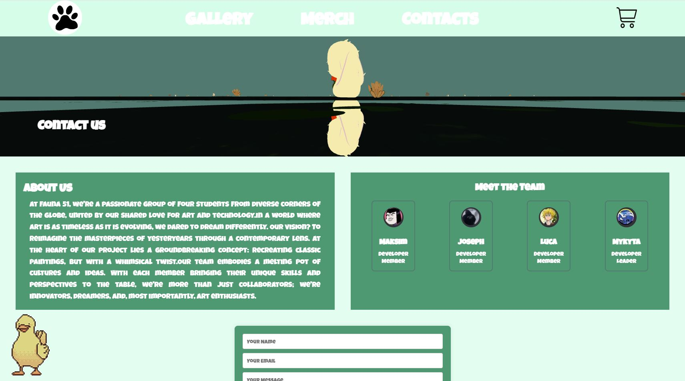
Our engagement with teachers, through feedback sessions, meetings, and presentations, was instrumental in shaping the direction of Fauna 51. Initially, we faced challenges in communicating our vision in a way that resonated with our stakeholders. These early obstacles underscored the importance of clear and concise communication, prompting us to refine our approach to ensure our ideas were understood as intended. Through these iterative exchanges, we gained valuable insights that helped refine our project's focus and execution.
The initial division of tasks within our team revealed disparities in workload and contributions, leading to friction and dissatisfaction. Recognizing the need for a more equitable distribution of responsibilities, we reassessed our approach to task allocation:
Mykyta took charge of the main page, setting the tone for the user's journey through the gallery.
Maksim was responsible for the Gallery Page and its content, a critical component of our art showcase.
Joseph initially tackled the Merch page, although the cart functionality remained incomplete.
I focused on the Contact Page and undertook the crucial role of integrating the disparate code into a cohesive whole.
Addressing internal conflicts was essential to maintaining project momentum. By adopting an open-dialogue approach, we worked through disagreements and challenges, striving for solutions that aligned with our project's best interests. This process was not without its difficulties, but it was a critical component of our collaborative efforts, ensuring that every voice was heard and considered.
Through targeted interaction with our teachers and within our team, we navigated the complexities of bringing Fauna 51 to fruition. This process taught us the value of clear communication, the importance of balanced team dynamics, and the impact of constructive feedback on achieving a shared vision. Ultimately, these interactions were not just about building a project but about forging a team capable of overcoming obstacles through collaboration and mutual respect.
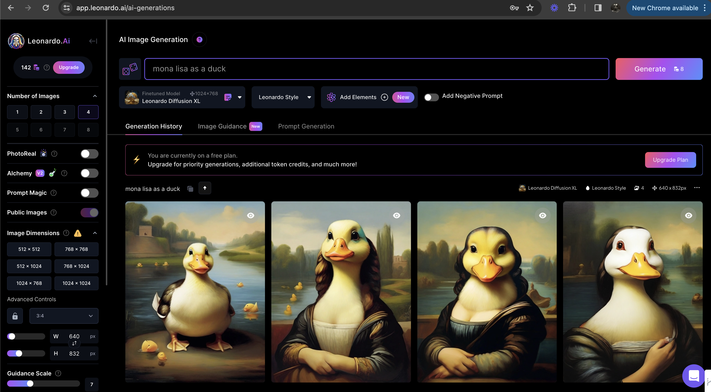
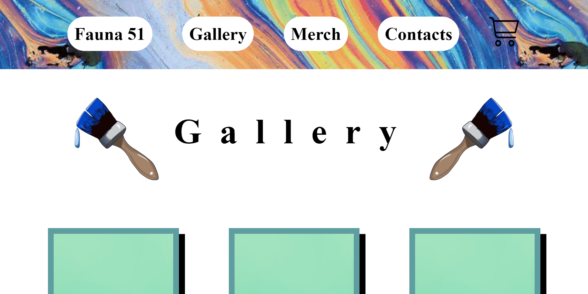
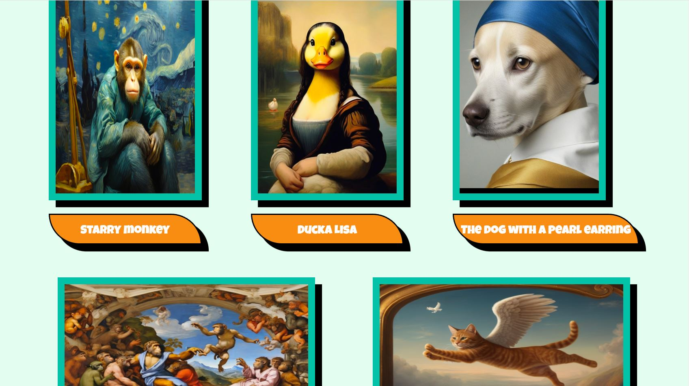
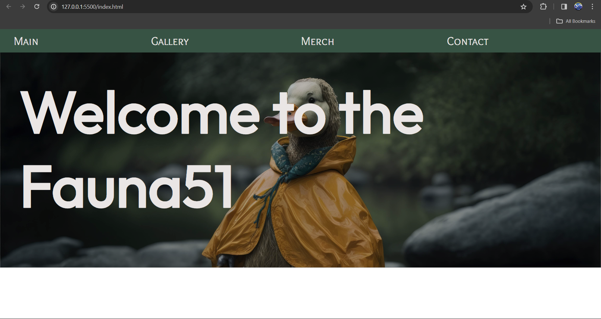
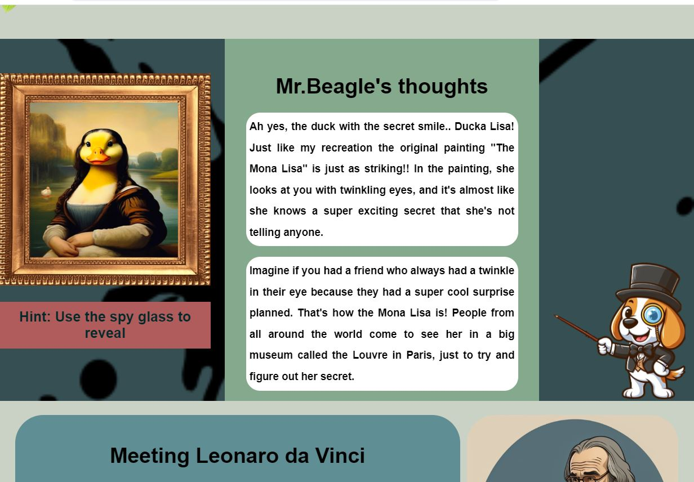
Stages of development
In the dynamic and ever-evolving world of technology and art, a unique idea took root within a group of ambitious students, culminating in an innovative project that marries classical art with modern AI technology. This is the story of how our team, affectionately named DUCK, embarked on a journey to transform the landscape of art education and entertainment for children through our online art gallery.
Our adventure began in the classrooms, where we were tasked with a project assignment. Amidst various ideas, we were drawn to the concept of creating an online art gallery. This wasn't just any gallery, but one that would stand out in its approach and execution. We envisioned a platform where the boundaries of classical art and contemporary technology intersect, creating a fusion that is both educational and entertaining.
After much brainstorming, we settled on a name that would represent our team's spirit and vision: DUCK. This quirky and memorable name soon became synonymous with our project, encapsulating our aim to create something that would resonate with our young audience.
The cornerstone of our project was the application of AI in reimagining classic art. We decided to take a path less traveled – replacing people in famous artworks with animals. This twist aimed not only to captivate the imagination of children but also to educate them about classical art in a fun and engaging manner. The fusion of AI technology allowed us to recreate these masterpieces with a fresh perspective, making them more relatable and enjoyable for kids.
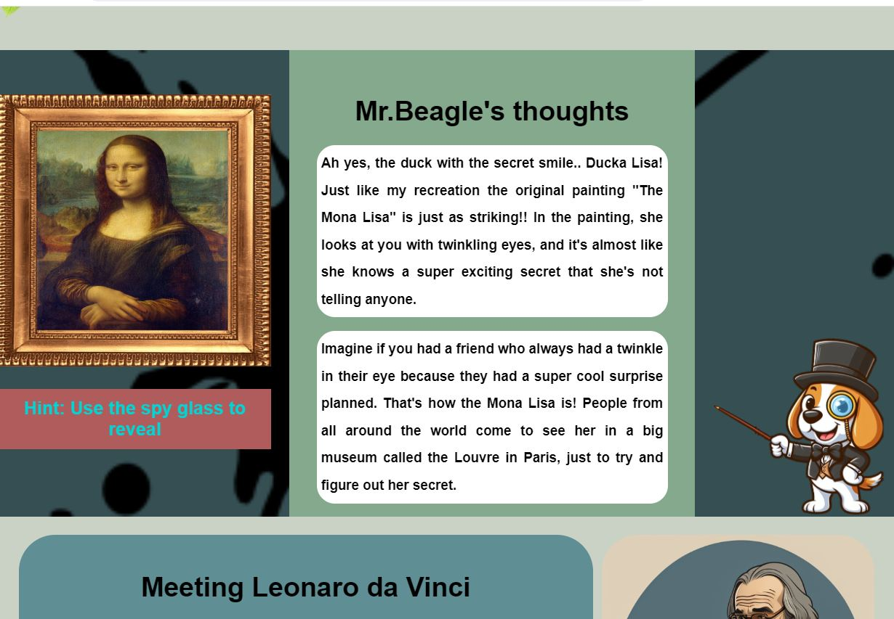
As our project journeyed forward, it underwent a significant transformation - both in concept and execution. A pivotal change was the renaming of our gallery from DUCK to Fauna 51, a name inspired by the mystique of Area 51, but with a twist that aligned with our theme - showcasing animals in art. This name change was more than just a rebranding; it symbolized our evolution and the uniqueness of our project The Fauna 51 gallery page serves as the portal to our world of AI-enhanced art. Here, visitors embark on a visual adventure, exploring our collection of artworks. Each piece, a reimagination of classical art with animals, invites the viewer to delve deeper. By clicking on a painting, one is led to a dedicated page where the original artwork and its artist are thoughtfully described. The interactive feature where hovering over the AI version reveals the real painting adds a layer of engagement and surprise, enriching the educational aspect of our gallery. A personal touch I am particularly proud of is the 3D animation on our contact page – a duck peacefully floating in a pond. This animation, which I crafted myself, not only adds a whimsical charm to the page but also serves as a nod to our original team name, maintaining a connection to our roots. Reflecting on the journey, an aspect that stands out is the communication dynamics within our team, particularly with our team leader. Unfortunately, these interactions were not always smooth, often marred by poor communication and a tendency towards unilateral decision-making. This led to several delays and unnecessary debates over simple matters, rooted mainly in the team leader's reluctance to consider opinions divergent from his own. These challenges were significant, as they impacted not just the timeline of our project but also the team morale and collaboration.